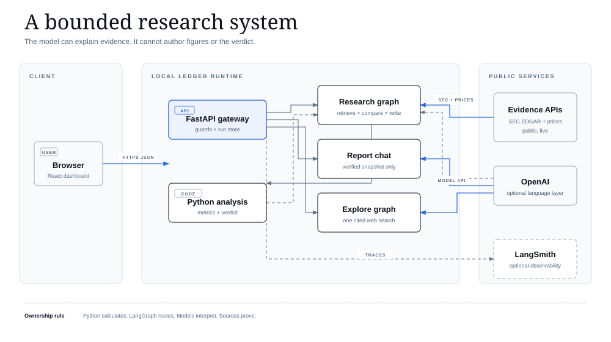
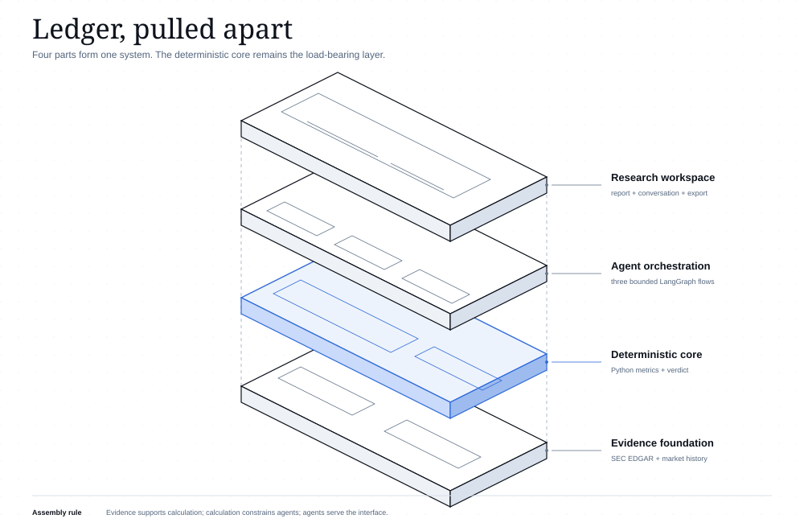
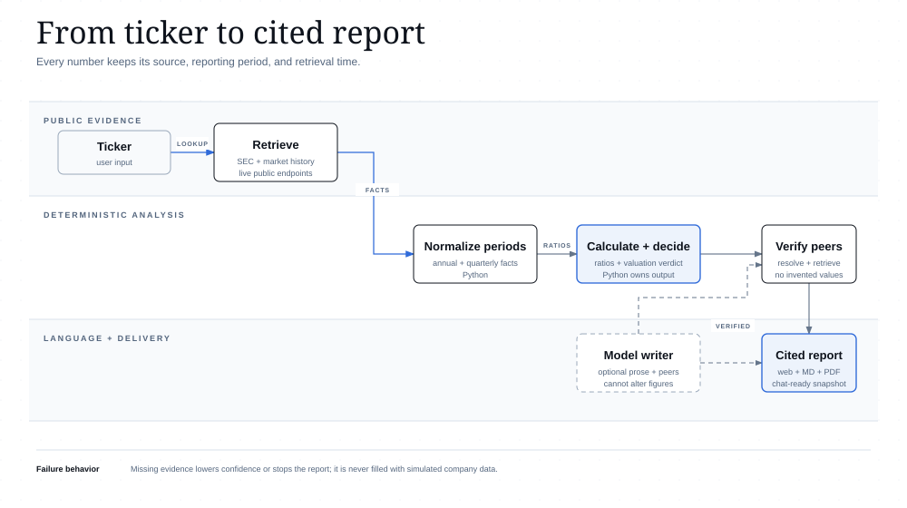
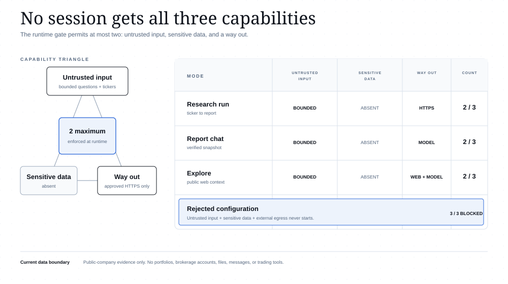

System architecture
Components, trust boundaries, and external services in one snapshot.

Exploded system
The four parts of Ledger shown in dependency order, with deterministic analysis as the load-bearing core.

Research data flow
How live evidence becomes deterministic calculations, verified peers, and a cited report.

Access triangle
Each mode gets at most two capabilities; a three-capability session is rejected before it starts.
